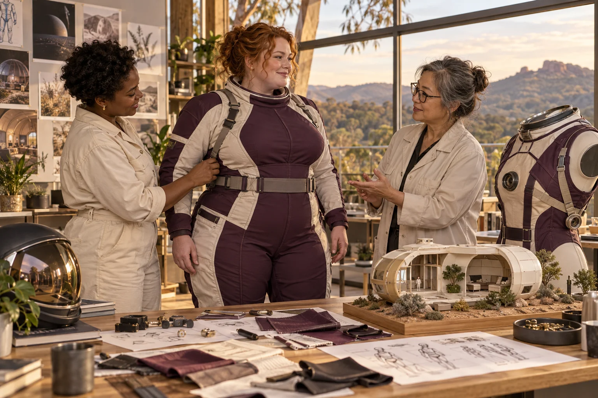

Name the mission's useful result
Choose the observation, service or human activity the system should support. Compare a smaller or conventional alternative before making a large architecture the default.

Space enterprises connect human needs with unforgiving engineering questions. This category spans inclusive spacewear, radiation research, fabrication, large payloads, long-duration habitats and openly speculative travel ideas. The scale of the vision is welcome, but every project needs a clear account of what can be tested on Earth, what depends on a future mission and what remains a question in fundamental science.
Follow the connections. Choose your direction.
Space enterprises connect human needs with unforgiving engineering questions. This category spans inclusive spacewear, radiation research, fabrication, large payloads, long-duration habitats and openly speculative travel ideas. The scale of the vision is welcome, but every project needs a clear account of what can be tested on Earth, what depends on a future mission and what remains a question in fundamental science.
A woman does not have to build a spacecraft to lead a useful space enterprise. Human-factors research, component inspection, systems modelling, scientific communication and maintainable resource loops can each become a serious field of work. Country and regional women bring experience in remote operations, practical maintenance and living with resource constraints. Those perspectives should shape the design rather than appear only in the marketing.
Choose the observation, service or human activity the system should support. Compare a smaller or conventional alternative before making a large architecture the default.
Build a non-critical component, mock-up or simulation with qualified support. Measure a defined behaviour and keep analogue results separate from flight readiness.
List unresolved interfaces, resource losses, failures and access needs. Ask which result must be established before another team would depend on the proposal.
Design spacewear around the movement, fit and dignity of many different bodies.
Engineering development
Make radiation protection decisions traceable to an exposure scenario and evidence.
Research frontier
Support contamination-response planning with accountable records and specialist-led evidence.
Engineering development
Connect metal printing and welding to parts that customers can inspect, repair and trust.
Practical pilot
Explore a large mining payload through an Earth-based systems study with visible assumptions.
Research frontier
Turn a large deep-space payload vision into a mission with a defined purpose and testable interfaces.
Research frontier
Investigate long-duration life support by measuring the limits of one resource loop.
Research frontier
Explore underground space habitats through human needs, maintainable systems and site-specific questions.
Research frontier
Give extraordinary travel ideas a rigorous home that separates mathematics, fiction and testable physics.
Speculative concept
Study the whole engineering chain behind a proposed fusion system for space.
Research frontier
Begin with women's own experiences across bodies, ages, cultures and places. Invite disagreement and choose a practical change together.
Create a women-led design brief →


Design a possible network of satellites using interactive orbit, sensor, launch and communications tools.
Explore elements, crystals, metamaterials and frontier ideas through quantities, mechanisms and the nearest working technology.
Explore possible futures for relationships, living systems, intelligence, movement, science and culture.
Developed from the ten original space-industry suggestions on slide 17 and planning page 8. Starship names identify historical design scenarios, not a supplier agreement. Portals and warp concepts remain explicitly speculative; no listed mission or space system is claimed to be operational.